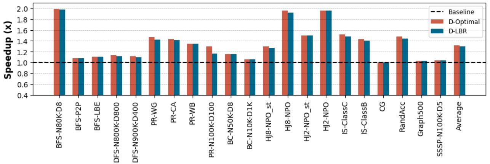
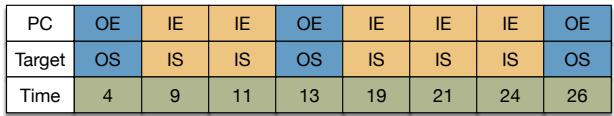
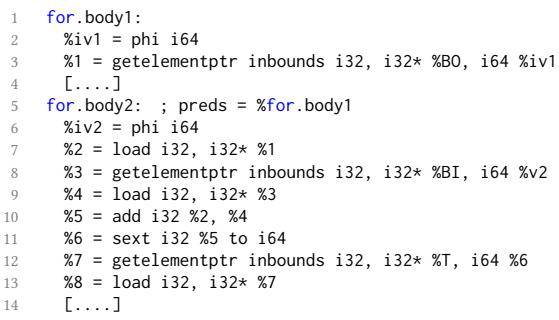

APT-GET: Profile-Guided Timely Software Prefetching 论文解析¶
0. 论文基本信息¶
作者 (Authors): Saba Jamilan, Tanvir Ahmed Khan, Grant Ayers, et al.
发表期刊/会议 (Journal/Conference): EuroSys
发表年份 (Publication Year): 2022
研究机构 (Affiliations): University of California, Santa Cruz, University of Michigan, Google
1. 摘要¶
目的
- 解决现有自动化软件数据预取（automated software data prefetching）技术因静态特性而无法保证预取及时性（prefetch timeliness）的核心问题。
- 现有方法（如 Ainsworth & Jones [9]）虽能保证高准确率和覆盖率，但因缺乏动态执行时间信息，导致预取过早（可能被缓存驱逐）或过晚（无法完全隐藏延迟），从而错失大量性能提升机会。
方法
- 提出 APT-GET，一种基于剖析（profile-guided）的新型软件预取机制，通过动态执行信息确保预取的及时性。
- 其核心设计包含两个关键步骤：
- 动态剖析（Dynamic Profiling）：利用现代处理器中已有的硬件支持（如 Intel 的 **Last Branch Record **(LBR)），以极低开销收集应用程序执行剖析信息。该信息用于精确刻画包含延迟关键负载（delinquent loads）的循环的执行时间。
- 分析建模（Analytical Modeling）：基于收集到的剖析数据，建立一个新颖的分析模型来确定两个最优参数：
- **预取距离 **(prefetch-distance)：通过分析循环执行时间的分布（如

Figure 4. Distribution of a loop’s execution time containing a delinquent load [39] in terms of CPU cycles measured using LBR samples
所示），分离出指令组件（IC）和内存组件（MC）的延迟，从而计算出能完全隐藏内存延迟的最佳预取距离。 - **预取注入点 **(prefetch injection site)：对于嵌套循环，分析内层循环的平均迭代次数，决定是在内层还是外层循环中注入预取指令，以应对低迭代次数循环的挑战。
- 将上述逻辑实现为一个 LLVM 编译器 Pass，能够自动、精准地将剖析得到的最优配置注入到程序的中间表示（IR）中。
结果
- 在 10 个真实世界的内存延迟敏感型应用上对 APT-GET 进行了评估，主要结果如下：
| 对比项 | APT-GET | Ainsworth & Jones [9] (SOTA) |
|---|---|---|
| 平均加速比 | 1.30× | 1.04× |
| 最高加速比 | 1.98× | < 1.30× |
| LLC MPKI 平均降低 | 65.4% | 48.3% |
| 平均指令开销 | 1.14× | 1.19× |
- 关键发现：
- APT-GET 的性能显著优于现有技术，在几乎所有测试应用上都取得了正向收益，而 SOTA 方法在某些应用（如 BC）上甚至出现了性能倒退。
- APT-GET 确定的预取距离非常接近理论最优值（

Figure 8. Speedup of prefetch-distance from LBR sampling technique and optimal prefetch-distance over non-prefetching baseline: LBR sampling technique achieves 1.30× overall speedup in average, compared to 1.32× speedup of optimal prefetchdistance, over non-prefetching baseline.
）。
- 优化预取注入点至关重要，对于多数嵌套循环应用，在外层循环注入预取能带来显著性能提升（

Figure 10. Speedup of injecting prefetches inside the outer or inner loops over non-prefetching baseline: For most of the applications, injecting prefeches inside the outer loop achieves 1.20× overall speedup in average, while injecting prefetches inside the inner loop improves speedup for DFS up to 1.11× over non-prefethcing baseline.
）。
- APT-GET 具有良好的输入泛化能力，在不同数据集上训练和测试的性能差异很小（

Figure 12. Execution time speedup provided by APT-GET over the non-prefetching baseline for different inputs as train/test data: APT-GET achieves 1.36× average speedup on average for test data sets compared to the 1.39× average speedup obtained for train data sets
）。
结论
- 预取及时性是制约现有软件预取技术发挥全部潜力的关键瓶颈。
- APT-GET 通过结合低成本的硬件剖析（LBR）和新颖的分析模型，成功解决了这一问题，实现了高时效性的软件预取。
- 作为一种实用的编译器优化技术，APT-GET 能够在现有硬件上部署，并为现代数据驱动的、具有不规则内存访问模式的应用带来显著且可靠的性能提升（平均 1.30×）。
2. 背景知识与核心贡献¶
研究背景
- 现代数据驱动应用（如机器学习、数据分析）展现出复杂且不规则的内存访问模式，导致处理器频繁遭遇cache miss，损失超过 60% 的处理器周期。
- 当前处理器中的硬件 prefetcher（如 next-line, stride prefetchers）无法有效处理这些不规则模式。
- 开发者因此依赖软件 prefetching，但手动插入困难且易出错。现有的编译器自动插入技术（如 Ainsworth & Jones [9] 的工作）虽能保证高准确率 (accuracy) 和高覆盖率 (coverage)，但由于其静态 (static) 本质，无法确保prefetch timeliness（预取及时性）。
研究动机
- Prefetch timeliness 是性能的关键：过早预取的数据可能在使用前就被驱逐 (evicted) 出 cache，而过晚预取则无法完全隐藏内存访问延迟。
- 静态方法无法获知代码在动态执行时的真实耗时，因此无法为不同应用场景（如不同循环体复杂度、不同 trip count）确定最优的预取参数。
- 如 Figure 1 所示，对于同一段代码，随着
do_work函数复杂度的变化，最优的 prefetch-distance 从 32 变为 16 再变为 4，静态方法无法适应这种变化。

Figure 1. Performance impact of prefetching various distances for indirect memory accesses with 256 inner loop iterations and varying work function complexity
- 如 Table 1 所示，即使预取地址准确（高 accuracy），小的 prefetch-distance 也会导致大量 late prefetch（需求加载命中 fill buffer 中的预取请求），证明了静态方法在及时性上的不足。

Table 1. Prefetch accuracy and timeliness depending on the prefetch-distance
- 对于 trip count 很小的循环，始终在内层循环 (inner loop) 注入预取指令效果甚微，需要能动态选择预取注入点 (prefetch injection site)，例如在外层循环进行预取。

Figure 2. Performance impact of prefetch-distance for indirect memory access kernel with low work function complexity and varying inner loop trip count
核心贡献
- 提出了 APT-GET，一种新颖的profile-guided（基于剖析的）软件预取机制，通过利用动态执行时间信息来确保预取的及时性。
- 设计了一套高效的剖析方法，利用 Intel Last Branch Record (LBR) 等现有硬件特性，以可忽略的开销收集应用程序的执行剖析信息，用于刻画负载指令的执行时间。

Figure 3. Schematic view of the Intel CPU’s Last Branch Record (LBR) highlighting the outer loop branches in blue, the inner loop branches in orange and the cycle times of each branch in green
- 引入了一个新颖的分析模型，基于收集到的剖析数据（特别是循环执行时间的分布，如 Figure 4 所示），自动计算出最优的 prefetch-distance 和 最优的 prefetch injection site。
Figure 4. Distribution of a loop’s execution time containing a delinquent load [39] in terms of CPU cycles measured using LBR samples
- 实现了一个 LLVM compiler pass，能够根据剖析结果自动注入具有可变 prefetch-distance 和灵活 injection site 的预取指令。
- 在 10 个真实世界的应用上评估了 APT-GET，结果表明：
- 相比无预取基线，APT-GET 平均获得 1.30× 的加速比，最高可达 1.98×。
- 相比当前最先进的软件预取机制 [9]，APT-GET 的性能平均高出 1.25×。
- APT-GET 平均减少了 65.4% 的 LLC cache miss (MPKI)。
3. 核心技术和实现细节¶
0. 技术架构概览¶
整体技术架构
APT-GET 的整体架构是一个 profile-guided（基于剖析的）软件预取系统，它通过结合硬件性能监控单元（PMU）和编译器技术，动态地为程序注入及时（timely）的预取指令。其核心目标是解决传统静态软件预取方法因无法获知动态执行时间而导致的预取过早（被驱逐）或过晚（无法隐藏延迟）的问题。
该架构主要由两个阶段构成：剖析阶段（Profiling Phase）和编译注入阶段（Compilation & Injection Phase）。
- 剖析阶段（Profiling Phase）
- 利用 Intel 处理器的 **Last Branch Record **(LBR) 硬件特性，在程序运行时以极低开销收集分支历史记录。
- 同时，使用 **Precise Event-Based Sampling **(PEBS) 来识别导致频繁 **Last Level Cache **(LLC) 失效的 delinquent loads（问题加载指令）。
- 将 LBR 样本与 delinquent loads 的程序计数器（PC）进行关联分析。
- 通过分析 LBR 记录中循环分支的时间戳，计算出包含问题加载指令的循环的执行时间分布。
- 基于执行时间分布图（如 Figure 4 所示），自动识别出代表不同缓存层级（L1/L2/LLC/DRAM）服务时间的峰值（peaks）。
Figure 4. Distribution of a loop’s execution time containing a delinquent load [39] in terms of CPU cycles measured using LBR samples
-
利用这些峰值数据，计算出最优的 prefetch-distance（预取距离）。
-
同时，通过统计 LBR 记录中内外层循环分支的出现次数，推断出内层循环的平均 trip count（迭代次数），以此决定最优的 prefetch injection site（预取注入点），即是在内层循环还是外层循环中注入预取指令。
-
编译注入阶段（Compilation & Injection Phase）
- 实现为一个 LLVM compiler pass，在 LLVM IR 层面工作。
- 该 Pass 能够利用 AutoFDO 技术，将剖析阶段得到的机器码 PC 地址精确映射回 LLVM IR 中的对应指令。
- 对于识别出的每个 delinquent load，Pass 会执行一个后向数据依赖分析（backward data dependency analysis），构建出用于计算其内存地址的指令序列，即 load-slice。
- 根据剖析阶段得出的 prefetch-distance 和 prefetch injection site，Pass 会复制并修改这个 load-slice：
- 将其中的加载（load）指令替换为
__builtin_prefetch指令。 - 在地址计算中加入预取距离偏移量。
- 将修改后的预取 slice 注入到指定的循环位置（内层或外层）。
- 将其中的加载（load）指令替换为
- Listing 4 展示了在内层循环中注入预取 slice 后的 LLVM IR 示例。

Listing 3. The simplified LLVM’s IR-level representation of the microbenchmark 1 before injecting the prefetch slice Listing 4. The simplified LLVM’s IR-level representation of the microbenchmark 1 after injecting the prefetch slice inside the inner loop
整个架构的关键创新在于，它建立了一个从动态执行剖析到静态编译优化的闭环，利用硬件提供的精准、低开销剖析信息来指导编译器做出更优的预取决策，从而确保了预取操作的及时性。
1. Profile-Guided Prefetch Distance Calculation¶
核心原理与算法流程
APT-GET 的核心在于利用硬件性能监控单元（PMU）和 Last Branch Record (LBR) 来动态推断最优的 prefetch-distance，以确保预取操作的 timeliness（及时性）。其基本思想是：通过分析包含“问题负载”（delinquent load）的循环在不同内存层次结构服务下的执行时间分布，分离出指令执行开销（IC_latency）和内存访问开销（MC_latency），从而计算出能完全隐藏内存延迟所需的预取距离。
-
输入:
- 一个未经优化的、未注入预取指令的应用程序二进制文件。
- 硬件支持：Intel CPU 的 LBR 和 Precise Event-Based Sampling (PEBS) 功能。
-
输出:
- 一个包含 delinquent load PC（程序计数器地址）、其对应的 optimal prefetch-distance 和 optimal prefetch injection site 的配置文件。该文件将被后续的 LLVM 编译器 Pass 消费。
-
算法流程:
- 识别问题负载 (Delinquent Load Identification): 使用
perf工具通过 PEBS 采样，捕获那些频繁引发 Last Level Cache (LLC) 未命中的加载指令的 PC 地址。 - 收集执行轨迹 (Profile Collection): 在默认频率下（例如每毫秒一次），使用
perf record启用 LBR 收集应用程序的执行剖面。LBR 记录了最近32个已执行的基本块（BBL）的分支信息，包括源地址、目标地址和执行时的 CPU cycle。 - 关联与过滤 (Correlation and Filtering): 将第一步得到的 delinquent load PC 与第二步收集的 LBR 样本进行关联。具体来说，定位到包含该 load PC 的基本块，并找到所有包含至少两次该基本块执行记录的 LBR 样本。
- 测量循环延迟 (Loop Latency Measurement): 对于每个符合条件的 LBR 样本，通过计算两次连续执行该循环分支指令之间的 CPU cycle 差值，得到该次循环迭代的实际执行时间。
- 构建延迟分布 (Latency Distribution Construction): 汇总所有测量到的循环执行时间，构建一个延迟分布直方图。
- 峰值检测与参数推导 (Peak Detection and Parameter Derivation):
- 分析延迟分布图，识别出多个 peaks（峰值）。这些峰值对应于负载数据被不同层级的内存（如 L1, L2, LLC, DRAM）服务时的典型延迟。
- 最左侧的峰值（最短延迟）被解释为在理想情况下（即数据已在 L1/L2 缓存中）的 instruction component latency (IC_latency)。
- 最右侧的峰值（最长延迟）代表了在未命中缓存、需要从主存（DRAM）加载数据时的总延迟。
- memory component latency (MC_latency) 被计算为：
总延迟 (最右峰值) - IC_latency (最左峰值)。
- 计算最优预取距离 (Optimal Prefetch Distance Calculation): 根据论文中的公式
IC_latency × prefetch_distance = MC_latency，推导出最优的 prefetch-distance 为MC_latency / IC_latency。
- 识别问题负载 (Delinquent Load Identification): 使用
Figure 4. Distribution of a loop’s execution time containing a delinquent load [39] in terms of CPU cycles measured using LBR samples
关键参数与技术细节
- LBR 的作用: LBR 提供了低开销、高精度的动态执行信息。它不仅能提供循环的平均执行时间，更重要的是提供了完整的 execution time distribution，这是静态分析无法获得的。通过 cycle 级别的计时，APT-GET 能够精确地将内存延迟与指令执行延迟分离开来。
- 峰值检测算法: APT-GET 使用
scipy.signal.find_peaks_cwt库函数，该函数基于 continuous wavelet transform (CWT) 算法来自动、鲁棒地识别延迟分布图中的峰值位置，避免了人工设定阈值的麻烦。 - 假设前提: 该方法的核心假设是，在没有缓存未命中的情况下，循环的指令执行部分（IC）的延迟是相对稳定和可预测的，这在实践中通常是成立的。
在整体架构中的作用
APT-GET 的 Profile-Guided Prefetch Distance Calculation 模块是整个系统实现 timely prefetching 的基石。它解决了传统静态编译器预取技术的最大痛点——无法根据实际运行时的动态行为调整预取策略。
- 上游依赖: 它依赖于标准的 Linux
perf工具链进行数据采集，这使得它能够无缝集成到现有的 Profile-Guided Optimization (PGO) 流程中，无需额外的、侵入式的探针代码。 - 下游消费: 其输出的配置文件被一个定制的 LLVM compiler pass 所消费。该 Pass 负责将静态分析得到的 load-slice（用于计算预取地址的指令序列）与动态计算出的 prefetch-distance 相结合，生成最终的、带有精准预取指令的优化代码。
- 效果验证: 如图8所示，通过 LBR 采样技术计算出的预取距离，其性能表现（1.30× 平均加速比）非常接近理论上的最优预取距离（1.32× 平均加速比），证明了该方法的有效性和准确性。
Figure 8. Speedup of prefetch-distance from LBR sampling technique and optimal prefetch-distance over non-prefetching baseline: LBR sampling technique achieves 1.30× overall speedup in average, compared to 1.32× speedup of optimal prefetchdistance, over non-prefetching baseline.
2. Dynamic Prefetch Injection Site Selection¶
APT-GET 的动态预取注入点选择机制是其确保 prefetch timeliness（预取及时性）的核心创新之一，它解决了传统静态方法在面对不同循环结构时无法自适应调整的缺陷。
核心动机与问题定义
- 传统的编译器预取技术（如 Ainsworth & Jones [9]）通常将预取指令静态地注入到最内层循环（inner loop）中。
- 这种策略在内层循环 trip count 较高时是有效的，因为有足够的时间窗口让预取的数据在被使用前到达缓存。
- 然而，当内层循环的 trip count 很低（例如只有几次迭代）时，在内层循环中注入预取会带来严重问题：
- 预取指令的执行开销（instruction overhead）相对于循环体本身变得不可忽略。
- 由于循环迭代次数少，预取可能无法覆盖足够多的后续内存访问，导致 coverage（覆盖率）低下。
- 预取操作可能过于“局促”，无法提供足够的提前量来隐藏内存延迟。
- 因此，APT-GET 提出了一种动态决策机制：根据循环的实际运行时特征，智能地选择在 inner loop 或 outer loop 中注入预取指令。
实现原理与算法流程
- APT-GET 利用 Intel 处理器的 Last Branch Record (LBR) 硬件特性来收集程序的动态执行信息。
- 输入: LBR 性能分析样本。每个 LBR 样本记录了最近 32 个已执行的基本块（BBL）的分支信息，包括程序计数器（PC）、目标地址和执行时的 CPU 周期。
- 关键洞察: 通过分析 LBR 样本中连续出现的分支 PC，可以推断出嵌套循环的结构和执行次数。
- 例如，在一个两层嵌套循环中，LBR 记录会交替出现外层循环和内层循环的分支。通过统计两个外层循环分支之间内层循环分支出现的次数，即可估算出内层循环的平均 trip count。
- 决策方程: APT-GET 使用一个基于覆盖率的启发式方程来决定注入点：
avg_inner_trip_count * C < prefetch_distance- 其中，
avg_inner_trip_count是从 LBR 分析得出的内层循环平均迭代次数。 prefetch_distance是通过分析循环执行时间分布（如 Figure 4 所示）计算出的最优预取距离。C是一个常数，代表为了达到目标覆盖率（例如 80%）所需的最小迭代次数。论文中提到，若要覆盖 80% 的需求加载，C的值应为 5。
- 其中，
- 决策逻辑:
- 如果上述不等式成立，意味着在内层循环中执行预取无法有效覆盖大部分内存访问（因为循环体太小），此时 APT-GET 会选择在 outer loop 中注入预取。
- 否则，预取指令将被注入到 inner loop 中。
Figure 3. Schematic view of the Intel CPU’s Last Branch Record (LBR) highlighting the outer loop branches in blue, the inner loop branches in orange and the cycle times of each branch in green
在 LLVM 编译器中的实现细节
- APT-GET 的 LLVM Pass 被设计为能够处理两种场景：单层循环和嵌套循环。
- 当决策结果为在 outer loop 注入时，编译器需要执行更复杂的代码转换：
- Load-slice 扩展: 预取切片（load-slice）的构建不仅需要包含内层循环的归纳变量（PHI node），还需要回溯并包含外层循环的归纳变量。
- 地址计算调整: 在外层循环的上下文中，内层循环的归纳变量是未知的。为了解决这个问题，APT-GET 采用一种简化策略：将内层归纳变量初始化为 0，并利用从 LBR 分析得到的平均内层 trip count，生成多个预取指令，以覆盖内层循环的典型执行范围。
- 这一过程在 Algorithm 2 中体现为对
PHINode数量的判断（SetOfPhiNodes[p].size()>1），从而调用InjectPrefechesMorePhis函数来处理嵌套循环场景。
效果验证与作用
- Figure 10 清晰地展示了该机制的有效性。对于大多数包含嵌套循环的应用（如 BFS, SSSP, BC 等），在外层循环注入预取带来了显著的性能提升，而在内层循环注入则可能导致性能下降甚至不如基线。
- 该机制的作用是确保预取操作不仅在时间上是及时的（通过最优 prefetch-distance），而且在空间/控制流上也是高效的（通过最优 injection site），从而最大化预取的收益并最小化其指令开销。
Figure 10. Speedup of injecting prefetches inside the outer or inner loops over non-prefetching baseline: For most of the applications, injecting prefeches inside the outer loop achieves 1.20× overall speedup in average, while injecting prefetches inside the inner loop improves speedup for DFS up to 1.11× over non-prefethcing baseline.
3. LLVM Compiler Pass for Profile-Guided Prefetching¶
实现原理与核心流程
APT-GET 的核心是一个 function-level LLVM pass，它通过结合动态剖析信息与静态代码分析，实现了精准且及时的软件预取。其工作流程主要分为两个阶段：剖析数据准备和编译时指令注入。
-
剖析数据准备阶段：
- 系统首先运行目标应用，并利用 perf record 工具收集两类关键硬件性能事件样本。
- 第一类是 Precise Event-Based Sampling (PEBS)，用于精确定位引发频繁 Last Level Cache (LLC) misses 的“问题加载指令”（delinquent loads），并记录其 Program Counter (PC)。
- 第二类是启用 Intel Last Branch Record (LBR) 的常规采样，用于捕获程序执行路径上的分支历史及其时间戳。
- 随后，一个自动化脚本处理这些 LBR 样本。对于每个被识别出的 delinquent load PC，脚本会：
- 在 LBR 记录中定位包含该 PC 的基本块（Basic Block, BBL）。
- 通过分析连续分支的时间戳差值，计算出包含该加载指令的循环的迭代执行时间分布。
- 利用 scipy.signal.find_peaks_cwt 算法自动分析该分布，识别出代表不同缓存层级（L1/L2/LLC/DRAM）服务延迟的峰值。
- 根据公式
prefetch_distance = MC_latency / IC_latency（其中MC_latency是内存组件延迟，IC_latency是指令组件延迟），计算出最优预取距离。 - 同时，通过统计 LBR 中内外层循环分支的出现次数，计算出内层循环的平均 trip count，以决定最优预取注入点（内层或外层循环）。
- 最终输出一个映射文件，将每个 delinquent load PC 与其对应的 prefetch-distance 和 prefetch injection site 关联起来。
- 系统首先运行目标应用，并利用 perf record 工具收集两类关键硬件性能事件样本。
-
编译时指令注入阶段 (LLVM Pass)：
- LLVM pass 在编译时读取上述生成的映射文件。
- 它利用 AutoFDO 的能力，将剖析阶段获得的 PC 地址精确映射回 LLVM IR 中的具体加载指令。
- 对于每个被标记的加载指令，pass 执行一个改进的 load-slice 搜索算法（基于深度优先搜索 DFS）。
- 该算法向后遍历数据依赖图，不仅找到直接相关的循环归纳变量（PHINode），还会继续追溯以支持嵌套循环场景。
- 这使得系统能够构建出完整的地址计算切片，无论该加载指令位于单层还是多层循环中。
- 根据映射文件中的指导信息，pass 决定在何处（内层或外层循环）注入预取指令，并使用计算出的可变预取距离来修改地址计算逻辑。
- 最后，pass 复制整个 load-slice，并将其中的原始加载指令替换为
__builtin_prefetch内建函数，从而完成预取指令的注入。
Listing 3. The simplified LLVM’s IR-level representation of the microbenchmark 1 before injecting the prefetch slice Listing 4. The simplified LLVM’s IR-level representation of the microbenchmark 1 after injecting the prefetch slice inside the inner loop
关键特性与参数设置
- 动态距离与注入点：与传统静态方法使用固定
prefetch-distance不同，APT-GET 为每个预取点计算独立的、动态的最优距离，并智能选择内层或外层循环作为注入点，这是其实现高时效性的关键。 - 对复杂循环的支持：
- 支持非规范型归纳变量（例如
i *= 2而非仅i++）。 - 支持复杂的循环退出条件（例如
for(i:K){if(cond(i)) break;}）。
- 支持非规范型归纳变量（例如
- 后备机制：如果剖析数据不可用（例如 AutoFDO 映射失败），该 pass 会优雅地降级为执行 Ainsworth & Jones 提出的纯静态预取方案，确保功能的鲁棒性。
- 核心参数：算法中的一个关键阈值
K（见公式avg_inner_trip_count * K < prefetch_distance）用于决定何时切换到外层循环预取。文中提到，若要覆盖 80% 的需求加载，K的值应设为 5。
输入输出关系及在整体系统中的作用
APT-GET 的 LLVM pass 是连接动态剖析与最终优化代码的桥梁，其输入输出关系清晰定义了其在系统中的角色。
-
输入：
- LLVM IR：待优化应用程序的中间表示。
- Profile 文件：由剖析阶段生成的、包含 delinquent load PC 及其对应
prefetch-distance和injection site的映射文件。 - 调试信息：编译时需开启
-gmlt和-fdebug-info-for-profiling选项，以便 AutoFDO 能够准确地将 PC 映射到 IR 指令。
-
输出：
- 优化后的 LLVM IR：在原始 IR 的基础上，在计算出的最佳位置插入了带有可变距离的预取指令切片。
-
在整体系统中的作用：
- 执行者：它是 APT-GET 设计理念的最终执行者，负责将通过 LBR 剖析得出的“何时预取、预取多远”的动态洞察，转化为实际的机器指令。
- 通用化接口：通过构建在 LLVM 之上，该 pass 具备了良好的通用性，可以无缝集成到任何使用 LLVM 工具链的现代编译流程中。
- 性能兑现者：正是这个 pass 的精确注入，才使得 APT-GET 能够在真实应用中实现高达 1.98× 的加速比和 1.30× 的平均加速比，显著优于静态方法。
| 对比项 | APT-GET (Profile-Guided) | Ainsworth & Jones (Static) |
|---|---|---|
| 预取距离 | 动态、可变，为每个加载点单独计算 | 静态、固定，需手动调优 |
| 注入点选择 | 智能决策，可在内层或外层循环 | 固定，仅在内层循环 |
| 剖析依赖 | 依赖 LBR 和 PEBS 剖析数据 | 无依赖，纯静态分析 |
| 平均加速比 | 1.30× | 1.04× |
| LLC MPKI 平均降低 | 65.4% | 48.3% |
4. Automated Delinquent Load Profiling Methodology¶
自动化劣迹加载剖析方法论 (Automated Delinquent Load Profiling Methodology)
APT-GET 的核心创新在于其完全自动化的剖析流程，该流程能够精准识别性能瓶颈（即劣迹加载），并利用硬件特性推导出最优的软件预取参数。其实现原理与算法流程如下：
- 输入: 未经任何预取优化的原始应用程序二进制文件。
- 输出: 一个包含所有已识别劣迹加载指令指针（PC）及其对应最优预取距离 (optimal prefetch-distance) 和最优预取注入点 (optimal prefetch injection site) 的配置文件，供后续的 LLVM 编译器 Pass 使用。
剖析流程详解
该自动化方法由一系列紧密耦合的步骤组成，旨在从硬件性能计数器中提取动态执行信息：
-
步骤一：识别劣迹加载 (Delinquent Load Identification)
- 利用 Linux
perf工具的 Precise Event-Based Sampling (PEBS) 功能。 - 配置性能监控单元 (PMU) 以在发生 Last Level Cache (LLC) miss 时触发采样。
- PEBS 能够精确地捕获导致缓存未命中的具体加载指令的程序计数器 (PC)，这些指令被标记为“劣迹加载”。
- 利用 Linux
-
步骤二：收集 Last Branch Record (LBR) 剖析数据
- 在运行应用程序时，启用 Intel CPU 的 Last Branch Record (LBR) 功能进行剖析。
- LBR 是一个硬件缓冲区，能记录最近执行的 32 个（在论文实验平台上）分支指令的详细信息，包括：
- 分支源地址 (From)
- 分支目标地址 (To)
- 分支执行时的 CPU cycle 时间戳
Figure 3. Schematic view of the Intel CPU’s Last Branch Record (LBR) highlighting the outer loop branches in blue, the inner loop branches in orange and the cycle times of each branch in green
-
步骤三：关联 LBR 样本与劣迹加载
- 对收集到的所有 LBR 样本进行过滤，只保留那些包含已识别劣迹加载 PC 的样本。
- 通过检查 LBR 记录中连续两个分支条目所定义的 Basic Block (BBL) 范围，来确定劣迹加载 PC 是否位于该 BBL 内。
-
步骤四：提取循环延迟分布 (Loop Latency Distribution Extraction)
- 对于包含至少两次相同循环分支（即包含劣迹加载的循环）的 LBR 样本，通过相减两次分支的 CPU cycle 时间戳来计算单次循环迭代的执行时间。
- 将所有此类测量值汇集起来，形成一个循环执行时间的分布图。
Figure 4. Distribution of a loop’s execution time containing a delinquent load [39] in terms of CPU cycles measured using LBR samples
-
该分布图通常呈现多个峰值，每个峰值对应于劣迹加载从内存层次结构不同层级（如 L1, L2, LLC, DRAM）服务时的循环延迟。
-
步骤五：自动计算最优预取距离
- 使用 scipy.signal.find_peaks_cwt 算法自动检测分布图中的峰值位置。
- 最左侧的峰值（最短延迟）被解释为指令组件延迟 (IC_latency)，即假设所有内存访问都命中 L1/L2 缓存时的循环执行时间。
- 最右侧的峰值（最长延迟）与 IC_latency 的差值被解释为内存组件延迟 (MC_latency)，即由 DRAM 访问引入的额外开销。
- 根据公式
prefetch_distance = MC_latency / IC_latency计算得出最优预取距离。例如，在图4中，计算结果约为 7。
-
步骤六：确定最优预取注入点
- 通过分析 LBR 样本中内外循环分支的出现模式，自动计算内层循环的平均 trip count。
- 应用决策规则：如果
average_inner_trip_count * K < prefetch_distance（其中 K 是一个基于覆盖率需求的经验常数，如覆盖 80% 的加载则 K=5），则将预取指令注入到外层循环，否则注入到内层循环。 - 此决策确保了在 trip count 较小的循环中，预取操作仍有足够的时间提前执行，从而保证预取的及时性 (timeliness)。
在 APT-GET 整体架构中的作用
该自动化剖析方法是 APT-GET 实现高性能增益的关键前置步骤，其作用至关重要：
- 桥梁作用: 它成功地将动态运行时性能数据（来自 PEBS 和 LBR）与静态编译时代码优化（LLVM Pass）连接起来，克服了纯静态分析无法获知真实执行时间的固有缺陷。
- 参数生成器: 它为后续的编译器优化阶段提供了精确、个性化的配置参数（预取距离和注入点），使得每个预取指令都能在其最佳时机被注入，最大化隐藏内存延迟的效果。
- 通用性与自动化: 整个流程无需任何人工干预或手动调优，使其能够无缝集成到现有的 Profile-Guided Optimization (PGO) 工作流中（如 Google 数据中心已有的持续剖析基础设施），具备极强的实用性和可扩展性。
4. 实验方法与实验结果¶
实验设置
- 硬件平台: 实验在一台配备 Intel Xeon Gold 6242R CPU (3.10GHz, 768GB DDR4-2666 DRAM) 的服务器上进行。
- 软件栈: 使用 LLVM/Clang 10.0 编译器，在 Ubuntu 20.04 (Kernel 5.4) 系统上实现。编译时启用最高优化级别
-O3，并使用-gmlt和-fdebug-info-for-profiling生成调试信息以支持 Profile-Guided Optimization (PGO)。 - 对比基线:
- No-Prefetching Baseline: 不进行任何预取的原始程序。
- Ainsworth & Jones [9]: 代表当前最先进的静态编译器自动预取技术，其使用固定的预取距离（prefetch-distance）并将预取指令仅注入到内层循环。
- 评估指标: 主要关注 执行时间加速比 (Speedup)、LLC Misses Per Kilo Instructions (MPKI) 以及 指令开销 (Instruction Overhead)。
- 基准测试集: 选取了 10 个真实世界的内存密集型应用，这些应用均包含无法被硬件预取器处理的间接内存访问模式。具体包括：
- 图计算: 来自 CRONO 和 Graph500 套件的 BFS, DFS, PageRank, BC, SSSP。
- 科学计算: NAS Parallel Benchmarks 中的 IS (Integer Sort) 和 CG (Conjugate Gradient)。
- 数据库与哈希: HPC Challenge 的 RandomAccess 以及两种 Hash Join (HJ2, HJ8)。

Table 3. The list of real-applications

Table 4. Graph data-sets properties
核心结果数据
- 整体性能提升: APT-GET 相对于无预取基线实现了 1.30× 的平均加速比，最高加速比达到 1.98× (在 HJ8 和 BFS 上)。相比之下，Ainsworth & Jones 方法的平均加速比仅为 1.04×，且在某些应用（如 BC）上甚至出现了性能倒退。
- 缓存未命中减少: APT-GET 平均减少了 65.4% 的 LLC MPKI，而 Ainsworth & Jones 仅减少了 48.3%。这表明 APT-GET 能更有效地将数据提前加载到缓存中。
| 方法 | 平均 Speedup | 最大 Speedup | 平均 MPKI Reduction | 平均指令开销 |
|---|---|---|---|---|
| Ainsworth & Jones [9] | 1.04× | < 1.5× | 48.3% | 1.19× |
| APT-GET | 1.30× | 1.98× | 65.4% | 1.14× |

Figure 6. Execution time speedup provided by APT-GET over the non-prefetching baseline: APT-GET achieves 1.30× average speedup on average, compared to the 1.04× speedup provided by the state of the art (Ainsworth & Jones).

Figure 7. APT-GET ’s LLC MPKI, misses per 1000-instructions, reduction over the non-prefetching baseline (lower is better): on average, APT-GET provides 1.35× greater MPKI reduction than the state of the art (Ainsworth & Jones).
消融实验 (Ablation Studies)
消融实验旨在验证 APT-GET 中两个核心设计——基于 LBR 的预取距离优化和预取注入点优化——各自的有效性。
- LBR 预取距离优化的有效性:
- 通过将 APT-GET 计算出的动态预取距离与一组静态距离（4, 16, 64）进行比较，发现 APT-GET 在几乎所有应用上都取得了最佳或接近最佳的性能。
- 实验还表明，APT-GET 通过 LBR 采样找到的预取距离非常接近理论上的最优值（通过穷举搜索所有距离得到），证明了其分析模型的准确性。
- 结论: 动态、基于剖析的预取距离选择显著优于任何固定的静态距离。
Figure 8. Speedup of prefetch-distance from LBR sampling technique and optimal prefetch-distance over non-prefetching baseline: LBR sampling technique achieves 1.30× overall speedup in average, compared to 1.32× speedup of optimal prefetchdistance, over non-prefetching baseline.

Figure 9. Speedup for different static offset values and LBR over non-prefetching baseline: prefetch-distance of 4, 16, 64, and LBR sampling technique achieve 1.16×, 1.26×, 1.28×, and 1.30× speedup in average over non-prefetching baseline, respectively.
- 预取注入点优化的有效性:
- 对于包含嵌套循环的应用，实验分别测试了仅在内层循环注入预取和根据 APT-GET 分析结果（可能在外层循环注入）的性能。
- 结果显示，对于 trip count 较小的内层循环（如 BFS 在 loc-Brightkite 数据集上），在外层循环注入预取能带来显著性能提升（平均 1.20×），而在内层循环注入则几乎没有收益甚至有害。
- 唯一的例外是 DFS，其在内层循环注入效果更好。
- 结论: 静态地将预取指令注入内层循环并非普适策略，动态选择最优的预取注入点 (prefetch injection site) 对于处理不同特性的循环至关重要。
Figure 10. Speedup of injecting prefetches inside the outer or inner loops over non-prefetching baseline: For most of the applications, injecting prefeches inside the outer loop achieves 1.20× overall speedup in average, while injecting prefetches inside the inner loop improves speedup for DFS up to 1.11× over non-prefethcing baseline.
- 其他关键观察:
- 指令开销: APT-GET 的平均指令开销（1.14×）低于 Ainsworth & Jones（1.19×），说明其更精准的预取策略避免了不必要的指令注入。
- 输入泛化能力: 在一个数据集上训练（剖析）并在另一个数据集上测试，性能几乎没有下降，表明 APT-GET 的剖析信息具有良好的泛化性。
- 剖析开销: 整个剖析过程耗时仅 15-20 秒，在数据中心等持续集成/部署（CI/CD）场景下是可以接受的。